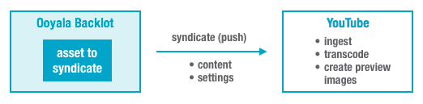
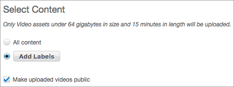
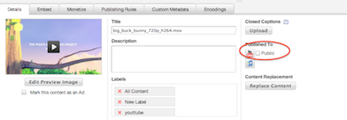

For YouTube syndication (that is, exporting videos to YouTube), Backlot automatically uploads the source files of
videos directly to YouTube, which handles all transcoding and the generation of preview images.
Syndication Occurs in One Direction
Syndication with YouTube is "one-way":
your content and settings in
Backlot are pushed
to YouTube.

Settings and content on YouTube are
not pulled back into
Backlot.
One YouTube Syndication per YouTube Account
You can have only one YouTube syndication for a single YouTube account. For example, if you
have YouTube accounts abc@abc.com and xyz@abc.com, abc@abc.com has its YouTube syndication
and xyz@abc.com must have a separate YouTube syndication.
YouTube Account Limits
Ooyala does not impose a limit on the size and duration of videos files that you syndicate
to YouTube. These limits are determined by your relationship with YouTube (your YouTube
account settings). Ignore the message in the
Backlot UI shown below.

How YouTube Handles Changes
YouTube does not let you replace the content of
a previously uploaded (or syndicated) video. Instead, YouTube assigns any new video content a new
identifier (ID). Because of this design, many changes you make to assets or settings on
Backlot cause YouTube to create new video
identifiers, including the following:
- Changing a video's name
- Changing other details, such as description
- Changing the video's metadata
- Removing labels from the video, either with the Backlot UI or by editing the feed itself to
remove the label. The videos formerly associated with that label are deleted from YouTube.
- Privacy settings. If you change privacy settings on YouTube, when Backlot updates YouTube, your former changes on
YouTube are lost, including statistics relating to the account.
Backlot supports only two YouTube privacy
settings: public or private. When you create a YouTube syndication, by default your videos are
public on YouTube. You can change this default, as detailed in the final step below.
Changing the privacy setting affects only videos added to the syndication
after the
change. To change the privacy setting on videos previously syndicated to YouTube, change
the setting on the individual asset with the
MANAGE page,
Details subtab for the specific asset, as shown in the
following example.
